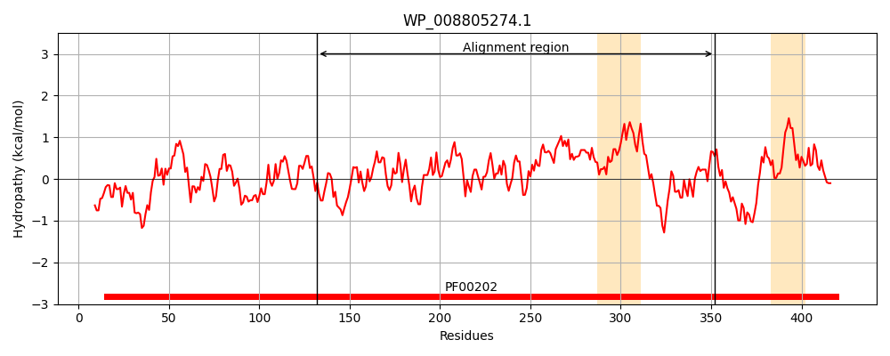
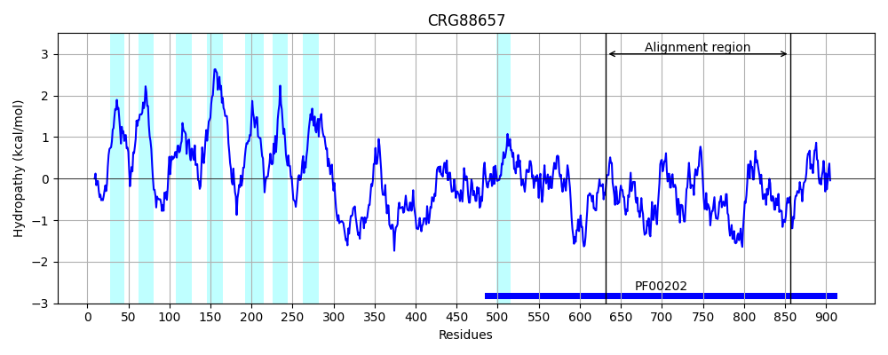
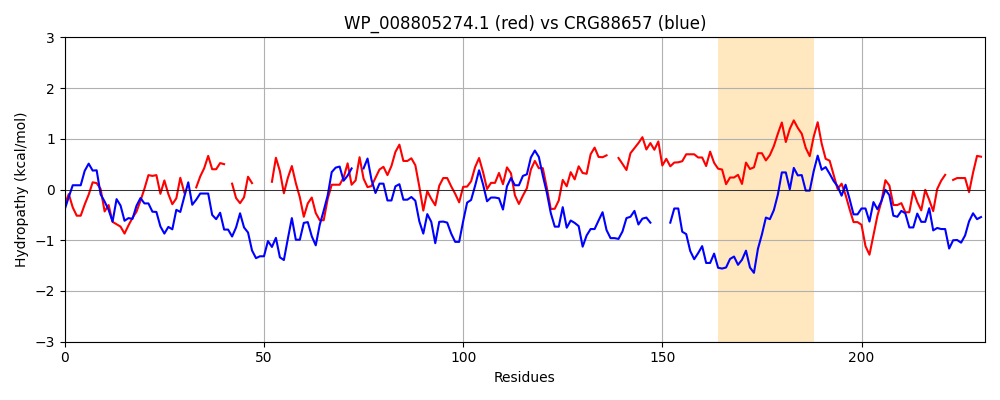

Hit Accession: CRG88657
Hit TCID: 9.B.313.1.2
Hit Description: gnl|BL_ORD_ID|2913 gnl|TC-DB|CRG88657|9.B.313.1.2 4-aminobutyrate aminotransferase / (S)-3-amino-2-methylpropionate transaminase [Talaromyces islandicus]
Mach Len: 231
e:0.000000
Query TMS Count : 2
Hit TMS Count: 8
TMS-Overlap Score: 0.000000
Predicted Substrates:None
BLAST Alignment:
Score: 230 , Bit scores: 93 bits, E-value: 2.8e-20, Alignment length: 231, Percentage identity: 31
Query: 132 IAFTGAYHGRTHYTLSLTGKVNPYSAGMGLM--PGHVYRAL-YPCALH----GVSDDEAIASIHRIFKNDAAPEDIAAIIIEPVQGEGGFYAASPAFMQRLRALCDEHGIMLIADEVQSGAGRTGTLFAMEQMGVAA--DITTFAKSIAGGFPLAGVTGRAEVMDAIAPGGLGGTYAGNPIACAAALAVLQIFEQENLLEKANQLGDTLRQGLLAIAEDHPE-IGDVRGLG 352
++F A+HGR +LS T + + P + AL YP H + +A RI K P +AA+++EP+Q EGG ASPAF Q LR + + ++ I DEVQ+G G TG +A + + + D+ TF+K AG + P T+ G+P A+L+ E + L+E GD L GL ++A+ +P+ I ++RG G
Sbjct: 632 MSFKSAFHGRLFGSLSTTRSKPIHKLDIPAFDWPQAPFPALKYPLEEHVQENAAEEKRCLAEAERIIKEFHNP--VAAVVVEPIQSEGGDNHASPAFFQGLRDITKRNNVLFIVDEVQTGVGATGKFWAHDHWNLQSPPDLVTFSKKA----QTAGYYYGNPALRPNKPYRQFNTWMGDPARAILFRAILEEIESKGLVENTAATGDYLYNGLESLAQKYPQAIQNLRGKG 856 | Protein Hydropathy Plots: |
|---|
|  |  |
Pairwise Alignment-Hydropathy Plot:
|
|---|
|  |